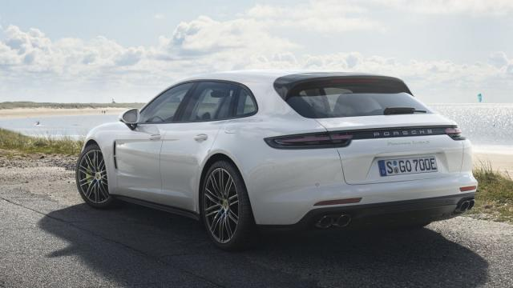
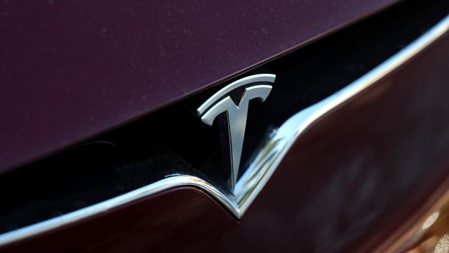
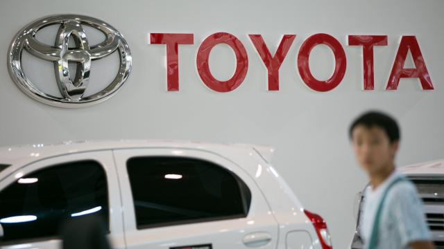

Nieuws

De Porsche Panamera werd in februari dit jaar al als plug-in hybride gepresenteerd. Nu krijgt ook de ruimere Sport Turismoversie een stekkeraansluiting.
n de Panamera Turbo S E-Hybrid werken een 550 pk sterke 4,0-liter V8 en een 136 pk sterke elektromotor samen. Dat zorgt ervoor dat het de krachtigste Panamera is die Porsche ooit heeft gemaakt. Het totaalvermogen ligt op 680 pk en 850 Nm koppel. Het accupakket heeft een capaciteit van 14,1 kWh en is - afhankelijk van de lader - in 2,4 tot 6 uur vol te laden. Het gemiddeld verbruik moet, volgens de NEDC-cyclus, op 3,0 l/100 km liggen. De volledig elektrische actieradius ligt op 48 kilometer.
Wie het wat minder zuinig aanpakt, moet in staat zijn om de Sport Turismo in 3,4 tellen naar een snelheid van 100 km/h te kunnen doen versnellen.
De topsnelheid ligt op 310 km/h. Er is in de Panamera Sport Turismo 425 liter aan bagage te vervoeren.
Met de bank plat ontstaat een laadvolume van 1.295 liter.
De Panamera Turbo S E-Hybrid Sport Turismo is per direct te bestellen.
De vanafprijs is vastgesteld op 202.400 euro.
Eind november staat hij bij de dealers.

Tesla zou samen met chipfabrikant AMD aan een eigen chip voor zelfrijdende auto's werken.
Dat meldt CNBC op basis van een ingewijde.
Het project zou geleid worden door Jim Keller, die vorig jaar overstapte van AMD naar Tesla.
Volgens de bron werken er ruim vijftig mensen aan de chip.
De chip zou zich gaan focussen op het versnellen van algoritmes voor kunstmatige intelligentie.
Met kunstmatige intelligentie kunnen de auto's zelfstandig rijden.
De bedoeling is dat er in 2019 volledig zelfstandig rijdende auto's van Tesla op de markt komen, zei CEO Elon Musk eerder al.
Zowel Tesla als AMD hebben niet gereageerd op het gerucht.
Tesla werkt vooralsnog veel samen met Nvidia, die vorig jaar nog meewerkte aan de Autopilot 2.0.

Autofabrikant Toyota blijft investeren in hybride auto's
Hybride auto's blijven belangrijk in het aanbod van Toyota, hoewel de concurrentie zo snel mogelijk naar elektrische auto's wil.
Topman Akio Toyoda van de Japanse automaker zegt dat zijn bedrijf wel met elektrische auto's komt, maar daar niet volledig op in wil zetten.
Toyoda geeft toe dat Toyota wat laat is met een volledig elektrische auto. Hij wil echter dat de grootste Japanse automaker realistische keuzes blijft maken over zijn modellenlijn al naar gelang markttrends zich ontwikkelen.
Volgens Toyoda komt Toyota verder met hybride-voertuigen, plug-inhybrides, auto's met traditionele motoren en auto's met brandstofcellen op de markt.
Steeds meer landen zetten de elektrische auto centraal in hun toekomstplannen. Ook veel automakers, zoals Volvo, Daimler en Volkswagen hebben plannen aangekondigd om meer elektrische auto's te gaan maken.
Toyota heeft eind vorig jaar de ontwikkeling van een volledig elektrische auto opgevoerd.
Ook is de automaker druk met de ontwikkeling van een zogeheten solid-statebatterij.
Die moet aan het begin van het volgende decennium beschikbaar komen en snellere laadtijden en groter bereik bieden dan de huidige autobatterijen.